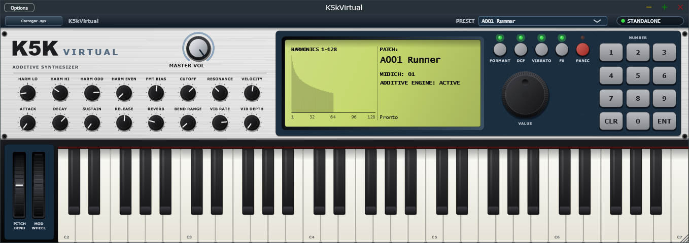

Síntese aditiva de 128 harmônicos, grátis no seu Windows.
O K5K Virtual é um sintetizador aditivo inspirado no clássico K5000S: cada som é montado harmônico por harmônico,
com envelopes próprios, filtro de formantes e um painel que lembra o instrumento original. Use como aplicativo ou como plugin VST3.
Versão 0.1.0 · Windows 10 e 11 (64 bits) · Aplicativo + plugin VST3 · Gratuito

Recursos
Motor aditivo
Até 128 harmônicos por voz, com níveis soft e loud que mudam o timbre conforme a força da nota.
Envelope por harmônico
Cada harmônico tem o seu próprio envelope de quatro estágios, com loops que fazem o som se mover no sustain.
Filtro de formantes
128 bandas espaçadas por semitom, com bias, envelope e LFO para vozes, vogais e varreduras.
Camadas e efeitos
Camada de onda sintética, LFO com vibrato, growl e tremolo, filtro DCF, chorus e reverb definidos por timbre.
Painel completo
LCD com espectro dos harmônicos em tempo real, 16 knobs, dial VALUE, teclado numérico e rodas de pitch e modulação.
Bancos SysEx
Abre arquivos .syx no formato do K5000 com o botão "Carregar .syx", com verificação de checksum.
100 timbres prontos
Os bancos A e D seguem a numeração e os nomes da lista de fábrica do K5000S. São recriações feitas para o K5K Virtual
a partir da categoria e do caráter de cada som, não os dados originais.
Banco A (A001–A060)
A001RunnerSFX
A002GorgizmoSFX
A003DstPulseLead
A004TelMetalSEQ
A005DriverTechno
A006ReznatorBass
A007GOOMLead
A008HeavenTXT Pad
A009CreaturzTXT Pad
A010K-BellsPercus
A011HardcoreTechno
A012MentaraLead
A013ShakkiriLead
A014TweekyLead
A015TangeriLead
A016RastyLead
A017PyperLead
A018ClavaxxPolysyn
A019BrasMorfPolysyn
A020InsyncerPolysyn
A021FusiacPolysyn
A022HyprWyrPolysyn
A023HistoryPolysyn
A024LauncherPolysyn
A025WintagePolysyn
A026LeadVoxPolysyn
A027VooCooPolysyn
A028SweepipePolysyn
A029FormantaPolysyn
A030HardFazeTXT Pad
A031TalkGlasTXT Pad
A032EaglelanTXT Pad
A033Bee3PadTXT Pad
A034ZischTXT Pad
A035WheelPadBG Pad
A036HotSweetBG Pad
A037EngageBG Pad
A038StarshipTechno
A039RaveRizmTechno
A040TB5005Techno
A041FroggaTechno
A042TeknoBasTechno
A043RoboBassBass
A044BasstronBass
A045DooBassBass
A046YazzaYPercus
A047RichnessPercus
A048HolyVibePercus
A049PlukkPercus
A050SeaworldSFX
A0514thPlaneSFX
A052ModuarSFX
A053ChimeraSFX
A054OppositeSFX
A055NebularSFX
A056MelmakerSFX
A057RippinSFX
A058UltimateSEQ
A059TalkieSEQ
A060MicesSEQ
Banco D (D001–D040)
D001DaLeadLead
D002DinosaurLead
D003OtaStackLead
D004NoisyLDLead
D005SunsetLead
D006TNT5000Polysynth
D007FantapolPolysynth
D008K.LitePolysynth
D009JumperPolysynth
D010VelSquarPolysynth
D011EntrancePolysynth
D012HerrFumyPolysynth
D013UndaWearPolysynth
D014MorphosPolysynth
D015GulliverTXT Pad
D016MonksTXT Pad
D017K-PhilesTXT Pad
D018Hot SpotTXT Pad
D019FloorSawBG Pad
D020ScottyBG Pad
D021PeacefulBG Pad
D022BreathyBG Pad
D023VoiceStrBG Pad
D024ChamberBG Pad
D025InterpolBG Pad
D026O-ToneBG Pad
D027RaverTechno
D028FFBassBass
D029CrystalzPercus
D030WireTrapPercus
D031CybaStrtPercus
D032VectorPercus
D033NylongPercus
D034BellEchoPercus
D035NewGhostSFX
D036AquariusSFX
D037MeltoninSFX
D038MooverSFX
D039CastaliaSFX
D040QuackSEQ
Instalar
Instalador: abra K5K-Setup.exe e siga as telas. Ele instala o aplicativo, cria o atalho no menu Iniciar e, se você marcar, o plugin VST3.
Portátil: descompacte K5K-win64.zip e abra K5kVirtual.exe. Para usar numa DAW, copie a pasta K5kVirtual.vst3 para C:\Program Files\Common Files\VST3.
Na primeira abertura, em Options, escolha a saída de áudio e ative o seu teclado em MIDI Inputs. Para menor atraso, use um driver de baixa latência e buffer de 256 amostras ou menos.
Requisitos
Item
Detalhe
Sistema
Windows 10 ou 11, 64 bits
Formatos
Aplicativo (Standalone) e plugin VST3
Controlador
Qualquer teclado MIDI (opcional; o painel tem teclado na tela)
Aviso do Windows
SmartScreen e antivírus
O K5K Virtual é gratuito e não tem assinatura digital paga. Na primeira vez, o Windows pode avisar que o arquivo é desconhecido:
clique em "Mais informações" e depois em "Executar assim mesmo".